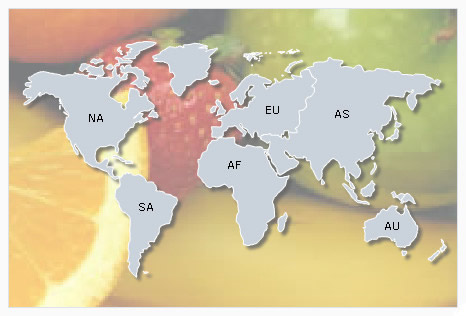
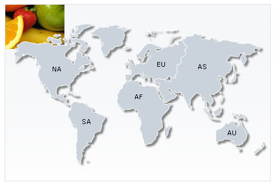

FusionMaps XT allows you to easily set a background image/movie for your map. You can use this option to embed background images (GIF, JPEG or PNG), other SWF Files, or data tables (in image format) as your map background.
To embed an image, all you need to do is set the bgImage property of <map> element. Additionally, you can also configure a lot of other settings like transparency, scale, stretch, tile etc. We will learn about each of these in details soon in this page.
Click here to explore all the configurable options of background image using an interactive demo.
Let's first see how we may use the bgImage property in a map, as shown below:
<map bgImage="MapBG-Small.jpg" bgImageAlpha="100" bgImageScale="100" bgImageDisplayMode="none" bgImageHAlign="left" bgImageVAlign="top" showtooltips="1" showshadow="1" showlabels="1" showbevel="0" showExportDataMenuItem="1" exportEnabled="1" exposeHoverEvent="1" animation="0" showCanvasBorder="1" borderThickness="1" showPrintMenuItem="1" bgalpha="5,10" bgcolor="375277,E9E9E9" fillColor="CAD3DB" hoverColor="E6EAEE" toolTipBgColor="FFFFFF" toolTipBorderColor="CAD3DB" baseFontColor="000000" borderColor="FFFFFF" canvasBorderColor="375277" canvasBorderAlpha="15"> <data> <entity id='NA' /> <entity id='SA' /> <entity id='AS' /> <entity id='EU' /> <entity id='AF' /> <entity id='AU' /> </data> </map>
{
"map": {
"bgimage": "MapBG-Small.jpg",
"bgimagealpha": "100",
"bgimagescale": "100",
"bgimagedisplaymode": "none",
"bgimagehalign": "left",
"bgimagevalign": "top",
"showtooltips": "1",
"showshadow": "1",
"showlabels": "1",
"showbevel": "0",
"showexportdatamenuitem": "1",
"exportenabled": "1",
"exposehoverevent": "1",
"animation": "0",
"showcanvasborder": "1",
"borderthickness": "1",
"showprintmenuitem": "1",
"bgalpha": "5,10",
"bgcolor": "375277,E9E9E9",
"fillcolor": "CAD3DB",
"hovercolor": "E6EAEE",
"tooltipbgcolor": "FFFFFF",
"tooltipbordercolor": "CAD3DB",
"basefontcolor": "000000",
"bordercolor": "FFFFFF",
"canvasbordercolor": "375277",
"canvasborderalpha": "15"
},
"data": [
{"id": "NA" },
{"id": "SA" },
{"id": "AS" },
{"id": "EU" },
{"id": "AF" },
{"id": "AU" }
]
}
In the above code, we're:
- Loading a background image MapBG-Small.jpg by setting it as the value of the bgImage attribute. If your image file is in a different location, you'll need to specify the relative path. Note that due to security restrictions, your image file has to reside on the same sub-domain as that of the map SWF File and a relative path to the same has to be specified.
- Setting canvas background of the map as transparent to get a full view of the background image
- Defining styles for formatting of other map elements
When you view this map (with the background image), you'll get something as under:
Simple and effective - isn't it?
Existing users: You might be wondering what happened to the bgSWF attribute which you have been using. Starting FusionMaps XT, use of bgSWF and bgSWFAlpha is deprecated. However, you can continue to use this parameter in your existing code without any problem.
In the following sections of this page we will learn how the background image can be configured.
FusionMaps XT allows you to configure the background images. You can configure the following:
In the following sections, we will discuss how to implement the above given configurations on the background image.
You can set the transparency of the image using the bgImageAlpha attribute.The default value of this attribute is '100'. The image remains fully opaque when 100 is set. 0 (zero) turns the image completely transparent. An example code setting the background image 50% transparent is shown as under:
In the above code, we have added the attribute bgImageAlpha='50'. The map will look as under:

Existing users: You might be wondering what happened to the bgSWF attribute which you have been using. Starting FusionMaps XT, use of bgSWF and bgSWFAlpha is deprecated. However, you can continue to use this parameter in your existing code without any problem.
You can also increase or decrease the magnification of the background image. To customize the magnification of the background image the attribute bgImageScale is used. The value of this attribute can be anything between 0-300. The default value of the attribute is 100. Any value less than 100 will reduce the size of the background image and any value more than 100 will increase the size of the background image.
The map for the above code will look as under:
You can set the position of the background image on the map according to your choice by altering the vertical and horizontal alignments of the background image. The two attributes used to set the alignments are bgImageVAlign (top, middle, bottom) and bgImageHAlign (left, middle, right). The default value of these two attributes are bgImageVAlign='top' and bgImageHAlign='left'. By default, the background image will appear on the top-left position of the map.
 |
 |
 |
| bgImageVAlign='top' bgImageHAlign='left' |
bgImageVAlign='top' bgImageHAlign='middle' |
bgImageVAlign='top' bgImageHAlign='right' |
 |
 |
 |
| bgImageVAlign='middle' bgImageHAlign='left' |
bgImageVAlign='middle' bgImageHAlign='middle' |
bgImageVAlign='middle' bgImageHAlign='right' |
 |
 |
 |
| bgImageVAlign='bottom'
bgImageHAlign='left' |
bgImageVAlign='bottom' bgImageHAlign='middle' |
bgImageVAlign='bottom' bgImageHAlign='right' |
A background image can be displayed using one of the various modes of display. The form can be changed using the bgImageDisplayMode attribute. The values of this attribute are none, center, stretch, tile, fit and fill. By default, the value of the attribute is set to none. Examples with different display modes are shown below:
 |
| none - The original image is placed at the top left corner of the background (default mode) |
 |
| Center - The image is positioned at the center of the map area |
 |
| Stretch - Expands the image to fit the entire map area, without maintaining original image constraints |
 |
| Tile - The image is repeated as a pattern on the entire map area |
 |
| Fit - Fits the image proportionately on the map area |
 |
| Fill - Proportionately fills the entire map area with the image |